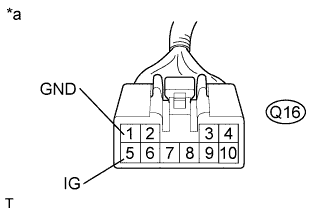
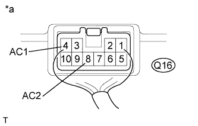

VOLTAGE INVERTER > ON-VEHICLE INSPECTION |
| 1. INSPECT VOLTAGE INVERTER ASSEMBLY |
|  |
Disconnect the voltage inverter connector.
Measure the voltage according to the value(s) in the table below.
| Tester Connection | Switch Condition | Specified Condition |
| Q16-1 (GND) - Q16-5 (IG) | Engine switch on (IG) | 11 to 14 V |
| Q16-1 (GND) - Body ground | Always | Below 1 V |
| *a | Front view of wire harness connector (to Voltage Inverter Assembly) |
|  |
Reconnect the voltage inverter connector.
Measure the voltage according to the value(s) in the table below.
| Tester Connection | Switch Condition | Specified Condition |
| Q16-4 (AC1) - Q16-8 (AC2) | Engine switch on (IG), Main switch on | AC 220 V |
| *a | Component with harness connected (Voltage Inverter Assembly) |